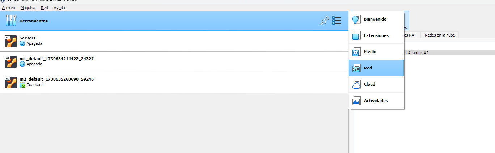
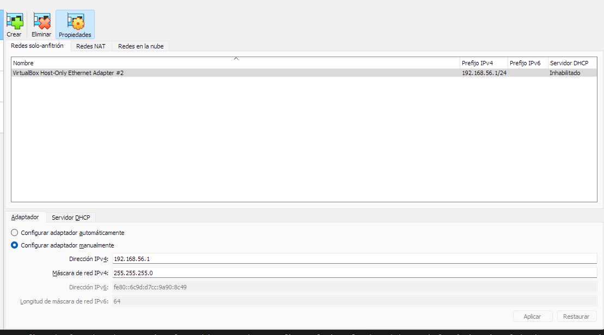
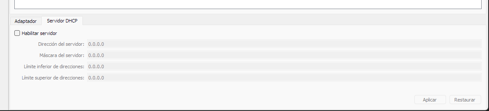
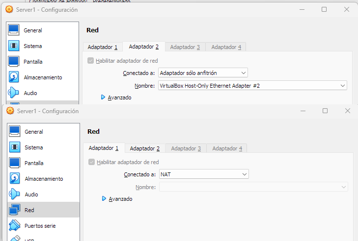

1. ¿Por qué Host-Only y qué problema resuelve?
En el capítulo anterior vimos el Modo Puente, que inserta la máquina virtual directamente en la red local física. Sin embargo, tiene un gran inconveniente en movilidad y docencia:
Si cambias de red (por ejemplo, pasas del aula a tu casa, o de la Wi-Fi del instituto a compartir datos con el móvil), la subred del router cambia (de 192.168.1.x a 192.168.0.x o 172.20.10.x). Tu IP estática en puente deja de funcionar y tienes que reconfigurar Netplan constantemente.
La solución arquitectónica profesional para entornos de desarrollo y Big Data es la combinación de doble tarjeta de red:
✦ Adaptador 1: NAT (enp0s3)
Gestionado automáticamente por VirtualBox. Le otorga a la máquina salida a Internet para descargar paquetes (apt update, Docker, librerías de Python) sin importar a qué red te conectes.
✦ Adaptador 2: Solo-Anfitrión (enp0s8)
Crea un switch virtual privado entre tu sistema anfitrión y la VM. La IP fija (ej. 192.168.56.10) es 100% inmutable: nunca cambia aunque apagues el Wi-Fi o viajes en tren.
2. Paso 1: Crear y Configurar la Red Solo-Anfitrión en VirtualBox
Antes de asignar el adaptador a la máquina virtual, debemos asegurarnos de que la red virtual de solo anfitrión existe en el Administrador de Red de VirtualBox y que su servidor DHCP está desactivado para no tener colisiones con nuestra IP estática.
Abrir el Administrador de Red del Host
En la ventana principal de VirtualBox, ve al menú superior: Archivo › Herramientas › Administrador de red del anfitrión (o presiona Ctrl + H / Cmd + H).

🔍 Acceso al Administrador de Red del Anfitrión en VirtualBox
Crear o Verificar el Adaptador 'vboxnet0' / 'VirtualBox Host-Only Ethernet Adapter'
Comprueba que existe un adaptador con la dirección base 192.168.56.1 y máscara 255.255.255.0. Si no existe, haz clic en el botón Crear.

🔍 Configuración del adaptador virtual con IP 192.168.56.1 y máscara 255.255.255.0
Desactivar el Servidor DHCP
Entra en la pestaña Servidor DHCP del adaptador y desmarca la casilla 'Habilitar servidor'. Como vamos a asignar la IP de forma estática y determinista en el servidor mediante Netplan, desactivar DHCP evita que VirtualBox asigne IPs aleatorias.

🔍 Desactivación del servidor DHCP para control estático absoluto
3. Paso 2: Asignar los Dos Adaptadores a la Máquina Virtual
Con la máquina virtual apagada, entra en Configuración › Red:
✦ Adaptador 1: NAT
- Habilitar adaptador de red: Marcado.
- Conectado a:
NAT. - Cable conectado: Marcado.
✦ Adaptador 2: Adaptador solo-anfitrión
- Habilitar adaptador de red: Marcado.
- Conectado a:
Adaptador solo-anfitrión. - Nombre:
VirtualBox Host-Only Ethernet Adapter(ovboxnet0). - Cable conectado: Marcado.

🔍 Vista de los adaptadores asignados en la configuración de la VM
4. Paso 3: Configurar Netplan en Ubuntu Server
Inicia la máquina virtual. Al tener dos adaptadores configurados en VirtualBox, el Kernel de Linux creará dos interfaces virtuales independientes:
enp0s3: Conectada al Adaptador 1 (NAT).enp0s8: Conectada al Adaptador 2 (Solo-anfitrión).
Puedes verificar los nombres exactos ejecutando:
ip -br linkEdición del Archivo de Netplan
Edita el archivo de configuración con nano:
sudo nano /etc/netplan/00-installer-config.yamlEscribe la siguiente configuración con sangría rigurosa de 2 espacios:
network:
version: 2
renderer: networkd
ethernets:
enp0s3:
dhcp4: true
enp0s8:
dhcp4: false
addresses:
- 192.168.56.10/24
nameservers:
addresses:
- 8.8.8.8
- 1.1.1.1
La salida hacia Internet la proporciona
enp0s3 a través de NAT. La red solo-anfitrión es un enlace puramente interno sin conexión exterior. Si defines una ruta por defecto en enp0s8, el Kernel de Linux intentará salir a Internet por el adaptador del host y perderás toda la conexión a Internet en la VM.
Aplicar los Cambios
Aplica la nueva configuración de red de forma segura:
# Asegura permisos restrictivos
sudo chmod 600 /etc/netplan/*.yaml
# Aplica la configuración
sudo netplan apply5. Paso 4: Protocolo de Verificación Bidireccional
Verificar la IP asignada en Ubuntu Server
ip addr show enp0s8Debe mostrar claramente: inet 192.168.56.10/24.
Probar conectividad desde la VM hacia el Host
ping -c 3 192.168.56.1Probar conectividad desde el Host hacia la VM
Abre la terminal de tu ordenador real (PowerShell en Windows o Terminal en macOS/Linux) y haz ping a la VM:
ping 192.168.56.10¡Ya tienes comunicación privada de alta velocidad garantizada!
Verificar que Internet sigue funcionando en la VM
ping -c 3 1.1.1.1✓ Lista de Comprobación del Administrador
-
Red
192.168.56.1/24verificada en el Administrador de red de VirtualBox con DHCP deshabilitado. - Adaptador 1 configurado en NAT y Adaptador 2 en Solo-anfitrión con cables conectados.
-
Netplan configurado con
enp0s3: dhcp4: trueyenp0s8: addresses [192.168.56.10/24]sin gateway secundario. -
Ping bidireccional superado entre Host (
192.168.56.1) y VM (192.168.56.10). - Salida a Internet verificada con éxito a través de NAT.